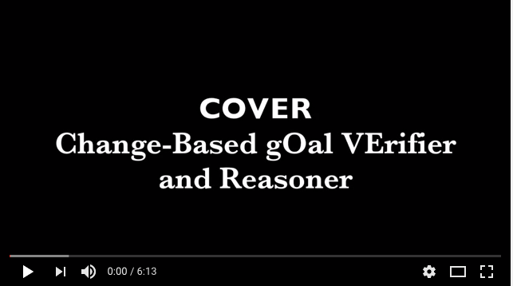

COVER (Change-based gOal VErifier and Reasoner) is a unified framework that supports the interplay between requirements engineer and software designer. It aims at constructing a bridge between the requirements' engineer and the software designer artifacts by enabling goal model analysis during software design. The goal model produced by the requirements analysts to be kept alive and updated while the system is designed. When the design of the system changes COVER verifies the new design against the requirements of interest. The verification results are used to trigger a goal model analysis procedure. The results of the goal model analysis can be used by the requirements engineer and the software designer to update the goal model or the design of the system. COVER is a prototype tool realized as a Java 8 stand-alone application.
Overview
The requirement engineer produces a goal model which describes the requirements of the system. Some of the goals are also associated with FLTL properties that formally describe the allowed behaviors of the system.
At each development step, i.e., whenever the designer produces a new increment or changes something in the model, the new (incomplete) design of the system is verified against the FLTL properties. Since the model is incomplete the verification procedure may propose three different values,
- T if the property is satisfied by the current design independently from the undefined part of the system,
- F if it is not, or
- ? whether its satisfaction depends on the parts which still have to be refined.
The verification results are used to trigger the goal model analysis and to examine the consequences of the requirement satisfaction over the goals of the goal model.
This technique offers several benefits.
- it makes designers conscious about the consequences of their design choices.
- whenever a new increment is proposed, designers may analyze the consequences of their changes over the all goal model.
- the analysis may also show inconsistencies of requirements and allow an early contract negotiation between the developer and the requirement engineer.